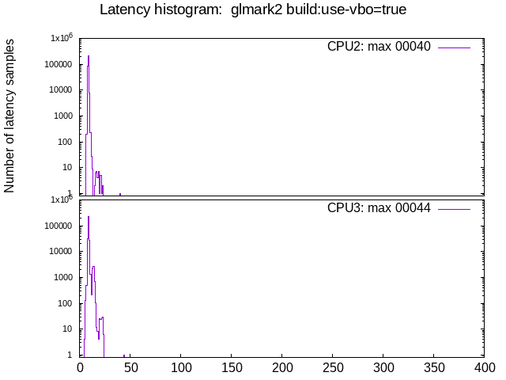
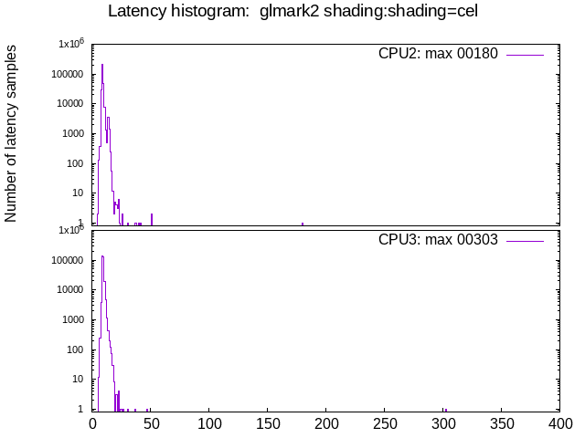
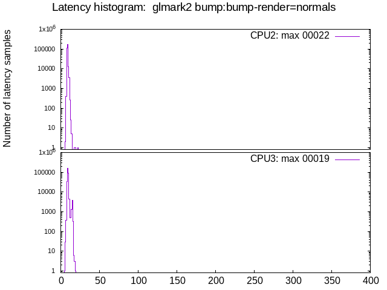
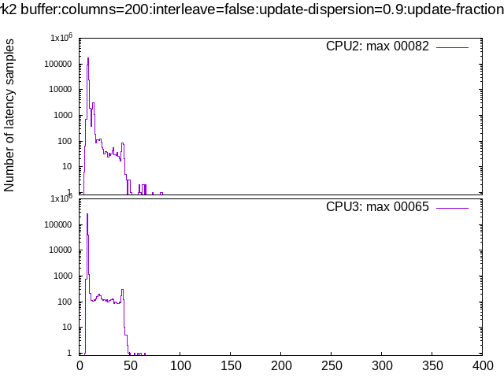
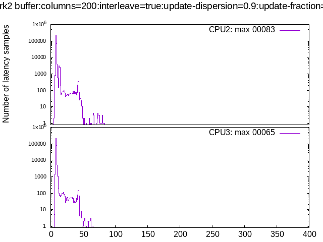
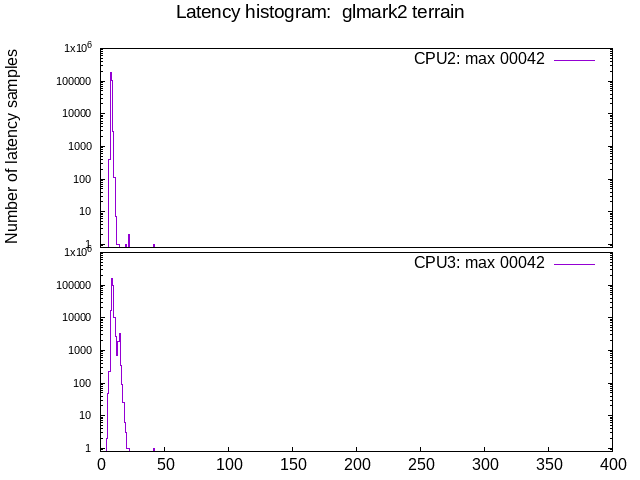
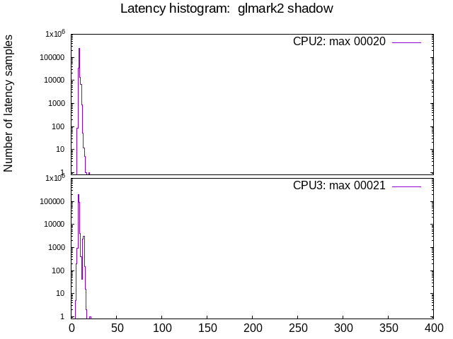
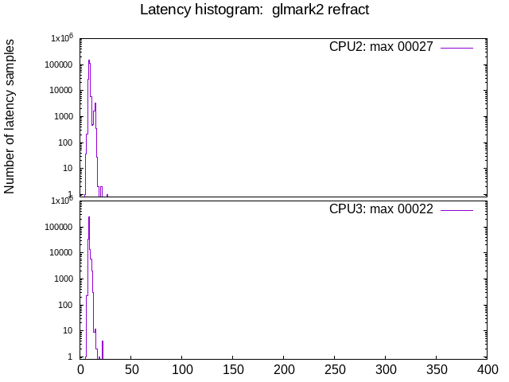
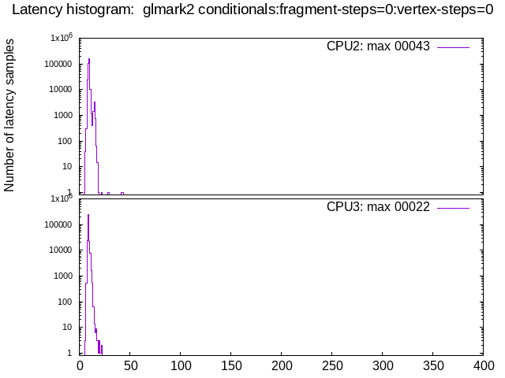
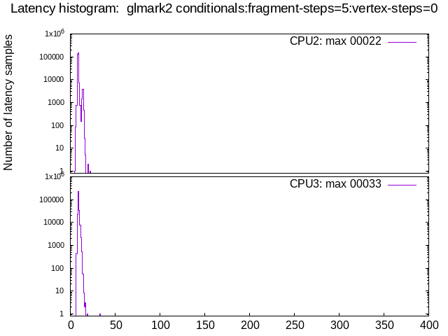

Latency tests: Yanling/Iwill N15 YL-KBRL2: GPU, isolcpus=izq
- Date: Fri, 11 Mar 2022 17:03:11 -0600
- Invocation: "./run_tests.sh" "-d" "60" "-o" "test_mxe-211_gpu" "Yanling/Iwill N15 YL-KBRL2: GPU, isolcpus=izq"
- cyclictest version: cyclictest V 2.30
- Test duration: 60 seconds
- Kernel commandline: BOOT_IMAGE=/boot/vmlinuz-5.10.0-11-rt-amd64 root=UUID=5f6b62f5-6656-4fbc-ae2e-98590ed81658 ro isolcpus=2,3 nohz_full=2,3 irqaffinity=0,1
- CPU: Intel(R) Atom(TM) Processor E3950 @ 1.60GHz
- Number of CPUs: 4
- Number of isolated CPUs: 2 (2,3)
- DMI info: dmi:bvnAmericanMegatrendsInc.:bvr2.06.10:bd02/06/2020:svnADLINKTECHNOLOGYInc.:pnMXE210:pvrRev.Ax:rvnADLINKTECHNOLOGYInc.:rnMXE210:rvrB1:cvnADLINKTECHNOLOGYInc.:ct13:cvrRevAx:
- OS description: Debian GNU/Linux 11 (bullseye)
- GPU: Mesa Intel(R) HD Graphics 505 (APL 3) (0x5a84)
- isolcpus=2,3
- GPU acceleration: yes
Test #01: stress-ng
Test #02: glmark2 build:use-vbo=false

Test #03: glmark2 build:use-vbo=true

Test #04: glmark2 texture:texture-filter=nearest

Test #05: glmark2 texture:texture-filter=linear

Test #06: glmark2 texture:texture-filter=mipmap

Test #07: glmark2 shading:shading=gouraud

Test #08: glmark2 shading:shading=blinn-phong-inf
Test #09: glmark2 shading:shading=phong

Test #10: glmark2 shading:shading=cel

Test #12: glmark2 bump:bump-render=normals

Test #13: glmark2 bump:bump-render=height

Test #14: glmark2 effect2d:kernel=0,1,0;1,-4,1;0,1,0;
Test #15: glmark2 effect2d:kernel=1,1,1,1,1;1,1,1,1,1;1,1,1,1,1;
- Command: cyclictest -D60 -m -p90 -i200 -h400 -q -t 2 -a2,3
- glmark2 command: glmark2 --data-path /home/zultron/rt_bench/build/glmark2/data -b effect2d:kernel=1,1,1,1,1;1,1,1,1,1;1,1,1,1,1;:duration=60
- stress-ng output
- mpstat output
- glmark2 output
- intel_gpu_top output
- free memory output
- raw cyclictest output
Test #16: glmark2 pulsar:light=false:quads=5:texture=false
Test #17: glmark2 desktop:blur-radius=5:effect=blur:passes=1:separable=true:windows=4
Test #18: glmark2 desktop:effect=shadow:windows=4
Test #19: glmark2 buffer:columns=200:interleave=false:update-dispersion=0.9:update-fraction=0.5:update-method=map

Test #20: glmark2 buffer:columns=200:interleave=false:update-dispersion=0.9:update-fraction=0.5:update-method=subdata
Test #21: glmark2 buffer:columns=200:interleave=true:update-dispersion=0.9:update-fraction=0.5:update-method=map

Test #22: glmark2 ideas:speed=duration
Test #23: glmark2 jellyfish

Test #24: glmark2 terrain

Test #25: glmark2 shadow

Test #26: glmark2 refract

Test #27: glmark2 conditionals:fragment-steps=0:vertex-steps=0

Test #28: glmark2 conditionals:fragment-steps=5:vertex-steps=0

Test #29: glmark2 conditionals:fragment-steps=0:vertex-steps=5
Test #30: glmark2 function:fragment-complexity=low:fragment-steps=5
Test #31: glmark2 function:fragment-complexity=medium:fragment-steps=5
Test #32: glmark2 loop:fragment-loop=false:fragment-steps=5:vertex-steps=5